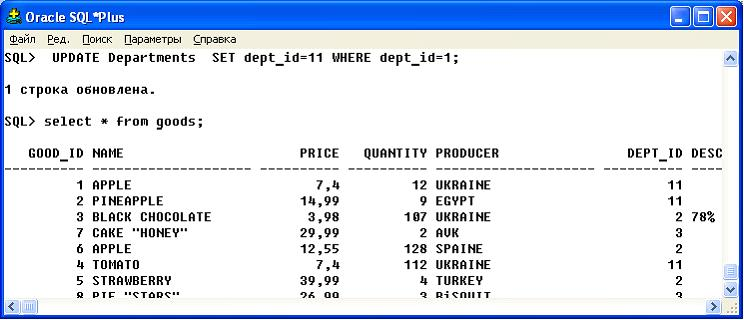
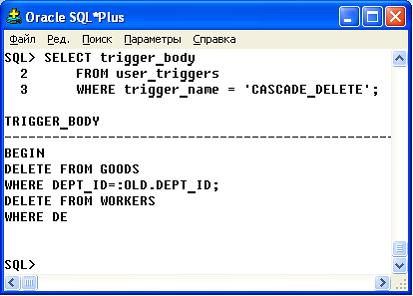
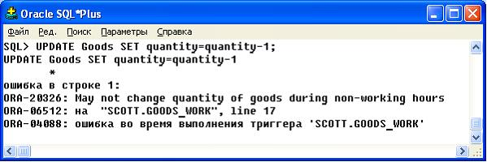

Практика 3. Создание и работа с триггерами объектов и событий
Во многих случаях триггеры дополняют стандартные возможности ORACLE, способствуя созданию гибко настраиваемой системы управления базой данных.
Например, триггер может позволять операции DML по таблице лишь тогда, когда они предпринимаются в нормальные рабочие часы. Итак, стандартные средства защиты ORACLE, роли и привилегии, контролируют, какие пользователи могут выдавать предложения DML для таблицы; в дополнение к этому, триггер еще более ограничивает операции DML, следя за тем, чтобы они выполнялись в определенное время. Это лишь один из способов, как вы можете использовать триггеры для настройки управления информацией в базе данных ORACLE.
Помимо этого, триггеры обычно используются для:
- автоматической генерации значений вычисляемых столбцов;
- предотвращения незаконных транзакций;
- ввода в действие комплексных правил защиты;
- обеспечения ссылочной целостности между узлами в распределенной базе данных;
- реализации сложных организационных правил;
- прозрачной регистрации событий;
- изощренного аудитинга;
- поддержания синхронных дублирований таблиц;
- сбора статистики по обращениям к таблице.
Каскадные триггеры
Создать триггер каскадного изменения записей. Таблица DEPARTMENTS и GOODS (а также таблица WORKERS) связаны между собой по полю Dept_id. При изменении данных этого поля в главной таблице (DEPARTMENTS) необходимо соответственно изменять данные в подчиненных таблицах (GOODS і WORKERS) |  |
|---|
CREATE TRIGGER CASCADE_MODIFY
AFTER UPDATE DEPT_ID ON DEPARTMENTS
FOR EACH ROW
BEGIN
UPDATE GOODS SET DEPT_ID=:NEW.DEPT_ID
WHERE DEPT_ID=:OLD.DEPT_ID;
UPDATE WORKERS SET DEPT_ID=:NEW.DEPT_ID
WHERE DEPT_ID=:OLD.DEPT_ID;END;
Создать триггер каскадного удаления записей. | |
|---|
CREATE OR REPLACE TRIGGER CASCADE_DELETE
BEFORE DELETE ON DEPARTMENTS
FOR EACH ROW
BEGIN
DELETE FROM GOODS
WHERE DEPT_ID=:OLD.DEPT_ID;
DELETE FROM WORKERS
WHERE DEPT_ID=:OLD.DEPT_ID;
END;
Обратите внимание на необходимость самостоятельно создать аналогичные триггеры (изъятия и модификации) для таблицы Goods, потому что таблицы Goods и Sales связаны между собой с использованием связи «многие-к-одному» по полю Good_id и при наличии информации о продаже товаров в таблице Sales невозможно проверить работу триггеров каскадного модифицирования и удаления. |  |
|---|
Результат работы триггера каскадного изменения показаны на рисунке 14

Рисунок 14 - Результат работы триггера каскадного изменения связанных строк
Просмотр информации о существующих триггерах
Такие представления словаря данных раскрывают информацию о триггеры:
- USER_TRIGGERS;
- ALL_TRIGGERS;
- DBA_TRIGGERS.
Если известно имя триггера (может быть получен выборкой из словаря данных), то можно использовать такие запросы, которые возвращают информацию о триггер TR1:
SELECT type, triggering_statement, table_name
FROM user_triggers
WHERE name = 'TR1';
Данный запрос возвращает информацию из представления USER_TRIGGERS о типе триггера (табличный триггер или триггер строки и его действия), о предложении триггера и название таблицы, которой принадлежит триггер TR1.
SELECT trigger_body
FROM user_triggers
WHERE trigger_name = 'CASCADE_DELETE';
С помощью запроса, показанного на рисунке 15, можно просмотреть тело триггера.

Рисунок 15 - Просмотр из словаря данных
Триггеры и комплексные проверки полномочий
Триггеры часто используются для реализации сложных проверок защиты данных таблицы. Используйте триггеры только для таких проверок полномочий, которые нельзя выполнить с помощью стандартных средств защиты базы данных в ORACLE.
Лучше всего для комплексной проверки полномочий использовать триггер предложения BEFORE. Это дает следующие преимущества:
- Контроль осуществляется до исполнения предложения триггера, так что не придется отменять выполненную работу, если предложение будет подвергнуто откату.
- Контроль осуществляется лишь один раз для предложения триггера, а не по каждой строке, затрагиваемой этим предложением.
Написать триггер запрета проведения операций по торговле во время выходных дней, а также в нерабочие часы. | |
|---|
CREATE or REPLACE TRIGGER goods_work
BEFORE INSERT OR DELETE OR UPDATE ON goods
DECLARE
not_on_weekends EXCEPTION;
non_working_hours EXCEPTION;
BEGIN
/* проверить на выходные дни */
IF ((To_char(sysdate, 'DY') = 'SAT') OR (To_char(sysdate, 'DY') = 'SUN')) THEN
RAISE not_on_weekends;
END IF;
/* Проверить на рабочие часы (8am .. 6pm) */
IF ((To_char(sysdate, 'HH24') < 8) OR (To_char(sysdate, 'HH24') > 18)) THEN
RAISE non_working_hours;
END IF;
EXCEPTION
WHEN not_on_weekends THEN
raise_application_error (-20324, 'May not change quantity of goods during the weekend');
WHEN non_working_hours THEN
raise_application_error (-20326, 'May not change quantity of goods during non-working hours');
END;
/
Результат работы триггера показан на рисунке 16

Рисунок 16 - Результат работы триггера
Аудит с помощью триггеров
Нам необходима информация, когда обращаются к таблице Goods , и какие типы запросов выдаются. Следующий пакет и триггер отслеживает эту информацию по часам и типам действий (например, UPDATE, DELETE или INSERT) по таблице Goods . Глобальная переменная сессии ITOG .ROW_ OPER инициализируется нулевым значением триггером предложения BEFORE, затем наращивается при каждом выполнении триггера строки, и, наконец, накопленная статистика сохраняется в таблице ITOG _TAB триггером предложения AFTER. | |
|---|
CREATE TABLE itog_tab
(oper_type VARCHAR2(10),
row_oper INTEGER,
Time_oper VARCHAR2(20));
CREATE OR REPLACE PACKAGE itog IS
Row_oper INTEGER;
END;
/
CREATE TRIGGER T1
BEFORE UPDATE OR DELETE OR INSERT ON Goods
BEGIN
itog.row_oper:= 0;
END;
/
CREATE TRIGGER T2
BEFORE UPDATE OR DELETE OR INSERT ON Goods
FOR EACH ROW
BEGIN
itog.row_oper:= itog.row_oper + 1;
END;
/
CREATE TRIGGER T3
AFTER UPDATE OR DELETE OR INSERT ON Goods
DECLARE
typ VARCHAR2(10);
hour VARCHAR2(20);
BEGIN
IF updating THEN
typ := 'update';
END IF;
IF deleting THEN
typ := 'delete';
END IF;
IF inserting THEN
typ := 'insert';
END IF;
hour := TO_CHAR(SYSDATE, DD:MM:YY - HH:MIN:SS');
INSERT INTO itog_tab VALUES (itog.row_oper, typ, hour);
END;
/
Задачи для самостоятельного выполнения
Разработайте триггер копирования каждой второй удаляемой строки. | |
|---|
Разработайте триггер копирования каждой третьей изменяемой строк. | |
|---|
Разработайте триггер, с помощью которого можно при покупке оставлять хотя бы один товар (уменьшить количество товаров до 0 нельзя). | |
|---|
Разработайте триггер ограничения изменения цены, например, с увеличением цены более чем на 50%, применить лишь 50% увеличения цены. | |
|---|
С помощью триггера запретить добавление товара, если в том же отделе уже есть товары общей стоимостью более чем 10000. | |
|---|
Далее следует выполнить лабораторную работу 3